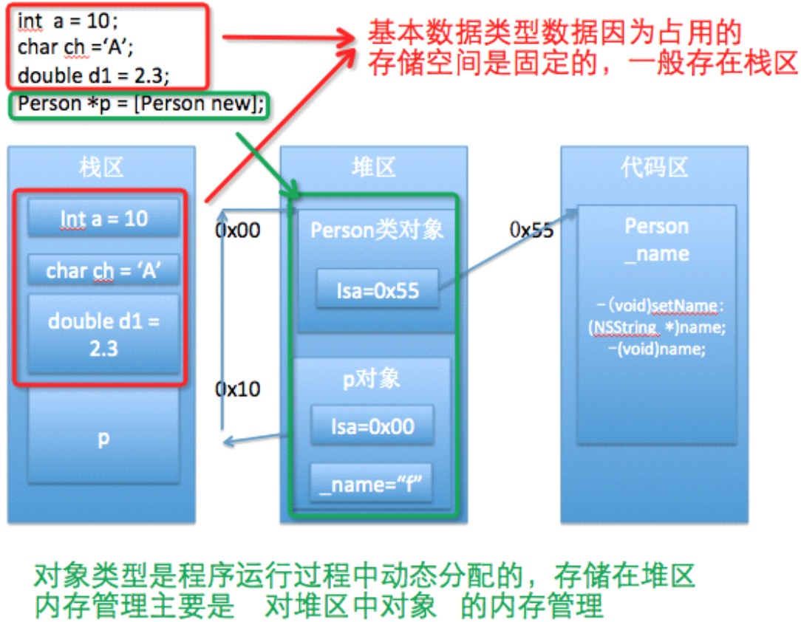

-
OC基础第一天
- 0.1. 【掌握】内存管理的基本概念及范围
- 0.2. 【理解】内管管理的原理及分类
- 0.3. 【掌握】手动内存管理快速入门
- 0.4. 【理解】内存管理的原则
- 0.5. 【掌握】单个对象内存管理（野指针）
- 0.6. 【掌握】单个对象内存管理
- 0.7. 【掌握】多个对象内存管理（野指针）
- 0.8. 【掌握】多个对象内存管理
- 0.9. 【掌握】set方法内存管理
- 0.10. 【掌握】@property参数（一）
- 0.11. 【掌握】@property参数（二）
- 0.12. 【理解】应用：电商App练习
- 0.13. 【理解】@class的使用
- 0.14. 【理解】循环retain问题
- 0.15. 【了解】NSString类的内存管理问题
- 0.16. 【掌握】autorelease基本使用
- 0.17. 【了解】内容总结
- Published with GitBook
1.【掌握】内存管理的基本概念及范围
1、内存管理的基本概念
- 1、为什么要进行内存管理？
- 不难发现，苹果手机与安卓手机比较起来，苹果手机尤为流畅，性能相比起来会好很多，这个与苹果手机内存管理是分不开的。
- 在程序开发中，应该及时将不用的数据回收，合理分配和管理内存 ，以提高程序的运行效率。
2、哪些行为会增加内存占用？
- 创建1个OC对象
- 定义1个变量
- 调用1个函数或者方法
分析下图有哪些对象？

- 由于移动设备的内存极其有限，所以每个APP所占的内存也是有限制的，当APP使用的内存超过20M，系统会向该APP发送内存警告消息，收到此消息后，需要回收一些不需要再继续使用的内存空间，比如回收一些不再使用的对象和变量等，否则程序会崩溃。
2、OC内存管理的范围
- 管理范围：
管理任何继承NSObject的对象，对其他的基本数据类型无效。- 本质原因：是因为对象和其他数据类型在系统中的存储空间不一样，其他局部变量主要存放于栈中，而对象存储于堆中。当代码块结束时，这个代码块中涉及的所有局部变量会被回收，指向对象的指针也被回收，此时，对象已经没有指针指向，但依然存在于内存中，造成内存泄露。 